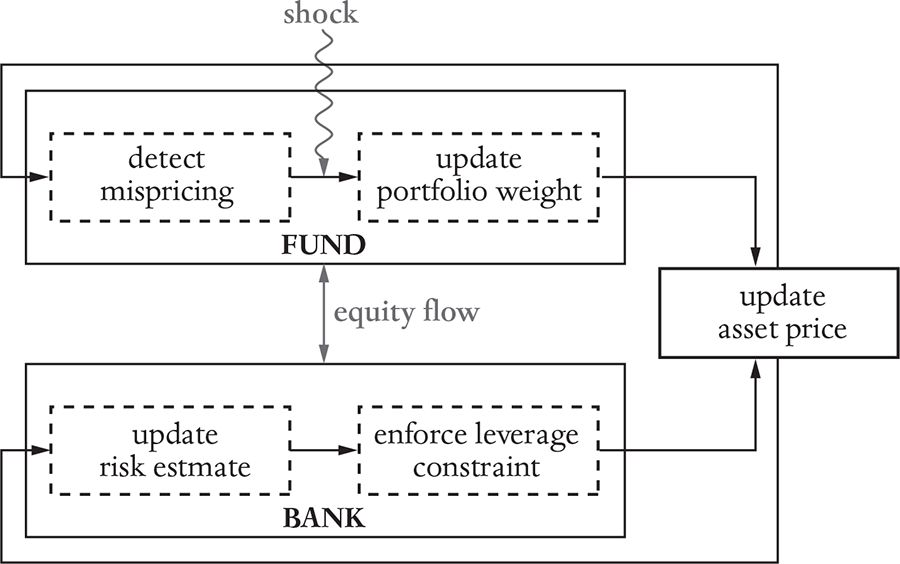
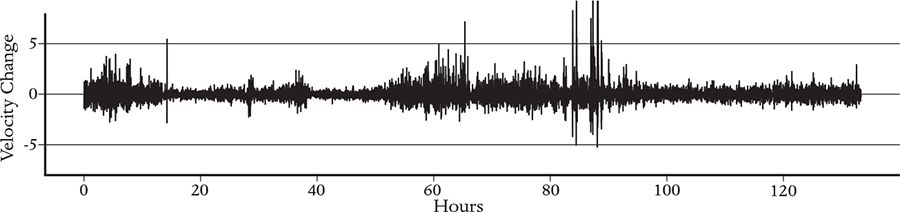

To understand this behavior, Christoph began simplifying the model by removing elements until the oscillating behavior stopped. The simulation shown in Figure 13 had three banks and three stocks. Christoph reduced this to one investment bank and one stock, and even got rid of the real economy, so there was only a very simple financial system. As long as the bank managed its risk using VaR, as recommended by Basel II, we saw the oscillations.
The outcome was a model that we described in a paper called ‘Dynamics of the Leverage Cycle’.20 This model was extremely simple, which was nice for conceptual understanding but perhaps too simple to be convincing. We later teamed up with Fabio Caccioli and Vincent Tan to create a more realistic model, detailed in another paper, ‘Taming the Basel Leverage Cycle’.21 In the interest of brevity I’ll skip the first model and describe the more realistic second model.
It involves two types of investor: An investment bank that uses leverage and a fund that does not. They trade a single asset, whose supply is fixed – their alternative is to hold cash. They are both given an initial endowment of the asset, and then they begin to trade. At each step, both the fund and the bank evaluate their demand for the asset, and the price is set so that supply equals demand. A diagram of the resulting model is shown in Figure 14.
The strategies of the two agents consist of a few simple but widely used heuristics. The fund is a value investor who knows the value of the asset, buys it when it’s undervalued and sells it when it’s overvalued (the first heuristic). The bank is an investment bank that has a leverage target and adjusts its leverage according to the recommendations of Basel II based on VaR (the second heuristic). The bank also periodically updates its volatility estimate by taking an average over the recent past. (The average is taken using exponentially decreasing weights, meaning recent volatility is weighted more than past volatility – the third heuristic.) There’s also a random shock that alters the fund’s estimate of the fundamental value, which can be turned up or down or even set to zero.

That’s it. The model lumps the entire investment-banking world into a single bank and the entire fundamental-value world into a single fund, and ignores everything else. This is a representative-agent model, and an extreme simplification, but that was helpful here because it made the model easy to analyze and allowed us to understand why the oscillations emerged.
The model has a few parameters that control its behavior. Perhaps the most important parameter is the relative wealth of the bank and the fund.22 If the fund has most of the wealth, then the dynamics are stable. The price of the asset stays close to its fundamental value, and the leverage and volatility are more or less constant. In contrast, if the bank has more wealth, everything changes significantly, and the system begins to oscillate, as it does in the bottom panel of Figure 13. Surprisingly, the oscillations persist even if the shocks are turned off. This is because the oscillations are chaotic; the system shows sensitive dependence on initial conditions and has all the properties of chaotic dynamics, as discussed in Chapter 1.
In the course of a cycle, the stock price, leverage and volatility behave much as they did in the crisis, as shown in Figure 12. The stock price and leverage slowly build, while the volatility slowly drops. Then the market suddenly crashes, the leverage plummets and the volatility spikes sharply upward. The frequency of the oscillations depends on the time-window used to compute volatility. When we do this using a two-year window, which is the industry standard, the cycle takes about ten years, roughly equivalent to the period of smooth growth in the build-up to the 2007–2008 crisis. The transition from the stable to the unstable regime occurs at a leverage equal to about 9.23
Why does the system do this? Because VaR is inherently destabilizing. Whenever the price drops, the investment bank sells in order to lower its leverage. It thus systematically sells into falling markets, and, if the bank were the only actor, the market would immediately crash. The incipient crash is prevented by the unleveraged value investor, who stabilizes the market by buying when the price falls and selling when it rises. The stability of the system depends on the competition between the value fund and the investment bank. As long as the investment bank is small or its appetite for leverage is low, the system is stable. But if the investment bank is large or its appetite for risk is high, the market begins to oscillate. This is because during the boom the estimated volatility slowly drops due to the smoothing action of averaging past volatility. As the volatility drops, the leverage increases nonlinearly, growing slowly at first and then suddenly becoming very large (recall the example in Chapter 4). Leverage acts as an amplifier; when the dial is turned up high enough, the system becomes so unstable that even an infinitesimal perturbation can trigger a huge crash. When the crash finally occurs, this drives the volatility up and the leverage down, and the cycle repeats itself.
The fact that the transition between the stable regime and the chaotic regime is both sudden and sharp poses a problem for regulators. Near the transition, a small increase in the wealth of the investment bank causes the system to abruptly move from a static fixed point to chaotic oscillations. The oscillations don’t start out small and get bigger; when they appear, they are full size. This is a good example of what in physics is called a phase transition, in which a system suddenly changes from one state to another. More realistic versions of this model could potentially help regulators anticipate and prevent this kind of financial chaos.
When Christoph presented his model at a meeting at the Organization for Economic Cooperation and Development (OECD), it was strongly criticized by a participant from the Bank for International Settlements because of the lack of foresight of the agents. The criticism was roughly this: ‘If the banks were rational, they would understand that their behavior is leading to a crash and alter it accordingly – for example, by reducing their leverage.’ My response was that real people are not always rational, and certainly were not in the run-up to the crisis! Perhaps, if we had recently experienced a similar crisis, and if we had had good quantitative agent-based models for systemic risk in the 1990s, we might have been able to see into the future well enough to avoid such a crisis, but we didn’t. Risk management was evolving during the run-up to the crisis – VaR only began to be widely implemented in the late 1990s.24 Thus, roughly a decade elapsed from this point until the crisis occurred – consonant with the timeline our model predicts. Our model suggests that implementing a new risk-management policy that we didn’t properly understand likely played a key role in causing the crisis. It also suggests that the use of VaR, as recommended by Basel II, together with the use of high leverage, were sufficient to have caused the crisis on their own. Although the model does not contain all the mechanisms that fueled the crisis, such as the housing bubble, it generates behavior that quantitatively matches the crisis and the events leading up to it. The housing bubble may only have been the spark that lit the fire.
Our model is in the spirit of Hyman Minsky’s and John G.’s prescient warnings, and we all agree that high leverage is problematic. But the underlying mechanism causing problems is different: Minsky argued that greed and competition would drive leverage up when markets got too quiet, and John G. argued that the problem is due to heterogeneous investors, with different levels of optimism. We show that systemic financial risk can be caused by prudent investors – the problem exists even if investors aren’t greedy, and even if they all act the same way. In our model, investors vary their leverage based on volatility because their risk manager tells them to do so, believing this makes them safer.
The job of a regulator like the Basel Committee is to set the rules of the game to make the financial system work for everyone. We need credit to make the economy run, but too much credit is destabilizing. Like Goldilocks, the regulator needs to get things ‘just right’. That said, the precautionary principle would suggest that regulators should err on the conservative side, setting leverage limits low enough to leave an ample buffer in order to ensure stability. The regulator’s job is complicated by the fact that the leverage cycle appears suddenly and at full size. Because leverage levels build slowly, and because random external events can affect prices and volatility, it’s hard to know that we’re in a cycle until the situation is already out of control. Nonetheless, high leverage, climbing markets and low volatility all signal that the market is in trouble.
Is it possible to formulate a better policy that allows higher leverage without increasing the risk of leverage cycles? To investigate this question, we introduced a generalization of the Basel leverage policy with a parameter that allowed us to use any mixture of Basel I (constant leverage) and Basel II (VaR). We found that the best policy depends on the situation. As we expected, when the banking sector is small and leverage is low, Basel II was the best policy. But when the banking sector is bigger and/or its leverage is higher, then the best policy is closer to Basel I. It’s a matter of making the right tradeoff between individual and systemic risk.
We also explored alternative policies and found that we could significantly improve risk management by giving the bank more time to respond to changing conditions – for instance, by allowing it to adjust its leverage targets slowly when the financial system comes under stress. This caused a big improvement, and provides important advice for regulators. We could only investigate this because our model is dynamic – it cannot be understood with a static equilibrium model.
Taken together, John’s original leverage model, Stefan’s model presented earlier in this chapter and Christoph’s model above show how standard economic theory and complexity economics are complementary. John’s equilibrium model blazed the trail, showing that the Modigliani-Miller theorem does not apply, and illuminating the basic principles of leverage cycles. Stefan’s agent-based model showed that leverage doesn’t just lead to crashes – it contributes to clustered volatility and fat tails in price changes on an ongoing basis. Christoph’s model discovered a different kind of leverage cycle, caused by risk management alone, and illustrated how this could lead to a slow boom followed by a rapid bust. Both agent-based models provided platforms to study policy, showing the advantages of alternative risk measures and the effectiveness of giving borrowers more time to reduce their leverage.
In 2010–11, the Basel Committee on Banking Supervision formulated a new protocol, Basel III, which is still not fully implemented, and there is a Basel IV on the horizon. These policies include more stringent caps on leverage and involve changes in the precise way leverage is calculated, as well as regulation of many other aspects of banking, including liquidity. When fully implemented, they will force investment banks to hold a few trillion dollars more capital in reserve than they did before, which will likely lower their profit margins. Not surprisingly, this is all very controversial. Many banks feel the regulations are excessive; other parties feel they don’t go far enough to prevent the next crisis. I think the only way to resolve this question is to build carefully calibrated agent-based models that represent the heterogeneous agents of the financial system more realistically and allow us to get quantitative answers.
The construction of such models is in progress. Working with the Bank of England, my ex–graduate student Alissa Kleinnijenhuis built a prototype for a potentially realistic model of systemic risk in global financial markets, and another ex-student Garbrand Wiersema invented a mathematical method to systemically understand the channels of contagion in financial markets and their interactions, which has been used by the Bank of South Africa.25,26 These models, which are ready to be put into practice, could provide new tools for monitoring and regulating the financial system.
In summary, providing a better understanding of systemic risk in financial markets is one of the success stories of complexity economics, which could be further developed to make financial markets safer.
Although the financial system and fluid flow are very different phenomena, they have many things in common, and the correspondence between financial turbulence and fluid turbulence has proven useful for concrete applications such as predicting the volatility of financial markets. As we will discuss in the next part of the book, the correspondence between the two phenomena may also offer insights into how we can do a better job of monitoring and regulating financial markets.
A fluid is anything that flows freely, like a gas or a liquid. When a fluid is slightly stressed, its motion is calm (called laminar by the experts), but when it is strongly stressed, it becomes turbulent. Picture the wind blowing over the sea: On a calm day the sea is flat. As the wind starts to blow, ripples form – not only are they small, but their shape is more or less regular. As the wind blows harder, the ripples turn into waves, which get bigger and bigger, and their motion becomes more and more irregular – the motion becomes turbulent. In a hurricane this becomes what is called fully developed turbulence.
As Edward Lorenz realized, turbulence is due to chaotic dynamics. As soon as the movement of the ripples becomes irregular, the motion is chaotic. Turbulence corresponds to complicated chaos, with many degrees of freedom. Like financial markets, fluid turbulence exhibits clustered volatility and fat tails. In a market, the clustered volatility is due to irregular price movements; in a turbulent fluid flow, it’s due to the irregular motion of the fluid. Figure 15 shows a measurement of the fluctuations of wind velocity in a given direction at a given point in space. There are periods of relative calm interspersed with gusts of wind, reminiscent of the clustered volatility for stock market returns in Figure 10.
The resemblance goes much deeper. As shown in a remarkable paper by the experimental physicist Shoaleh Ghashghaie and collaborators, the fluctuations for both fluid turbulence and finance vary across different scales in precisely the same manner.27 They compared a fluid-turbulence experiment to a finance ‘experiment’. In the fluid-turbulence experiment, they measured fluctuations in wind velocity between two probes at different locations, varying the distance between the probes from millimeters to meters. In the finance experiment, they recorded the fluctuations of the Deutschmark–dollar exchange rate by looking at the change in prices over time-intervals ranging from five minutes to two days. Then they compared the distribution of the sizes of the fluctuations in both cases.

They first matched the millimeter-separation fluctuations for fluid velocity against the five-minute fluctuations in prices. Because of clustered volatility, both distributions have fat tails. Most of the time, the fluctuations are small, creating a sharp peak in the center, but once in a while the fluctuations become large, creating a fat tail. As they went to larger scales, either by putting the velocity probes further apart or by measuring the price changes over a longer time, the distributions became less fat-tailed. By the time the probes were a few meters apart, or the prices were two days apart, the distribution became close to a normal distribution, with thin tails. As the scale changed, the distributions of the velocity fluctuations and price fluctuations changed in exactly the same way.28
The analogy between fluid and financial turbulence has practical applications. This was demonstrated by a group of French theoretical physicists studying fluid mechanics, including Jean-Francois Muzy, Jean Delour and Emmanuel Bacry, who adapted their techniques for predicting volatility in fluid turbulence to finance. This required only minor changes in the theory.29 Their models give better predictions for price volatility than previous techniques used in finance, though, as it happened, two financial economists who were then at Yale, Laurent Calvet and Adlai Fisher, independently developed a similar method around the same time.30 (Calvet and Fisher were strongly influenced by Benoit Mandelbrot, an early pioneer in chaos and complex systems, who also knew a lot about fluid turbulence.) It is striking that the same mathematical methods provide state-of-the-art forecasts for volatility in both finance and fluid turbulence.
In Chapter 1, we distinguished between simple chaos and complicated chaos. Fluid turbulence is an example of complicated chaos. In a strongly turbulent system, like a hurricane or rapids in the Colorado River as it flows through the Grand Canyon, there is both structure and randomness. This is only a conjecture – I have no way of proving it at present – but I believe that the dynamics of global financial markets are also an example of complicated chaos, more accurately called high-dimensional chaos or chaos with many degrees of freedom.
Complicated chaos, like fluid turbulence, happens in unstable systems with many interacting components. In the financial system, when there are many agents using high leverage or when trend following becomes prevalent, prices become unstable. The global financial market has become enormously complicated and closely connected: All developed countries have stock markets and bond markets. Hundreds of thousands of assets are traded globally every day. Hundreds of thousands of investors pursue diverse trading strategies. High-frequency traders turn over their positions in fractions of a second, while low-frequency value investors hold their positions for years: The difference in timescale is a factor of 10 million!31 As we saw in the LTCM crisis and the crisis of 2008, markets do not behave independently – a disruption in Thai markets nearly brought down the US financial system. (Similarly, Lorenz famously pointed out that a butterfly flapping its wings could influence the trajectory of a hurricane.) In such a complicated system, with the strong nonlinear feedback introduced by leverage and trend following, it would be surprising if the movements of prices were not chaotic and high-dimensional. Financial markets are undoubtedly complicated and competitive, and as discussed in Chapter 7, chaos and clustered volatility should be expected.
Our Basel leverage-cycle model makes it clear how leverage creates nonlinearities that can cause even a very simple financial system to be chaotic. That model is so simple that it cannot exhibit complicated chaos, but in a more realistic model, replacing the two representative investors with a more realistic constellation of diverse, heterogeneous investors, one would still expect to see chaos, but with more complicated, turbulent behavior. The models in this chapter suggest that leverage in financial markets corresponds to stress in fluid flows, and indicate that as market participants use higher leverage, the financial system becomes more turbulent.
The weather is the best example of how fluid turbulence affects our lives. A concerted and coordinated global effort has allowed us to make accurate weather predictions. Could we learn from weather prediction how to better understand the economy and keep its turbulence under control? We’ll explore this idea in the next part of the book.